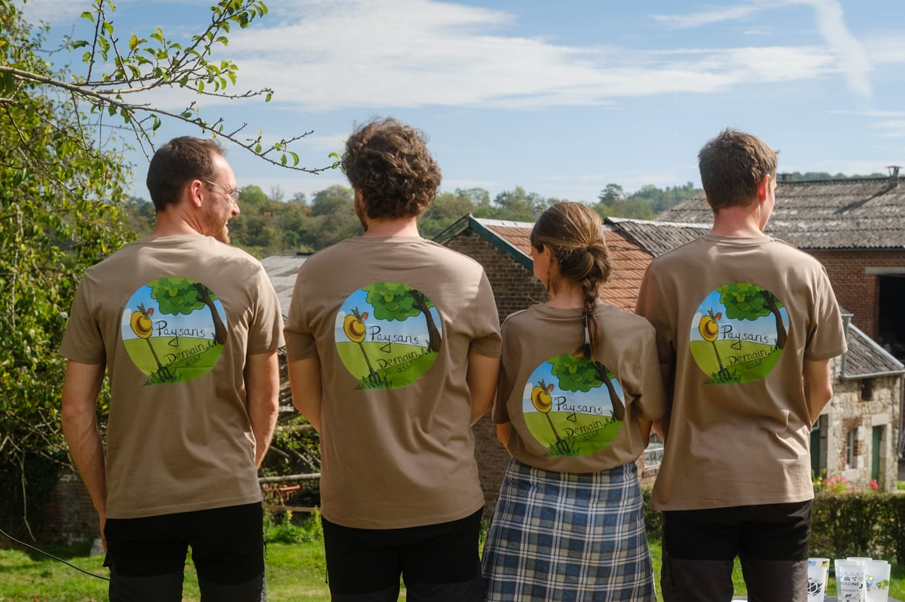
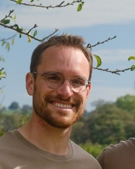
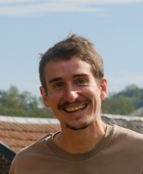
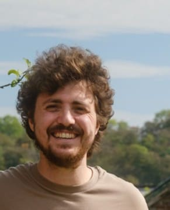
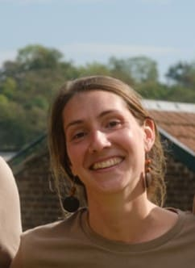
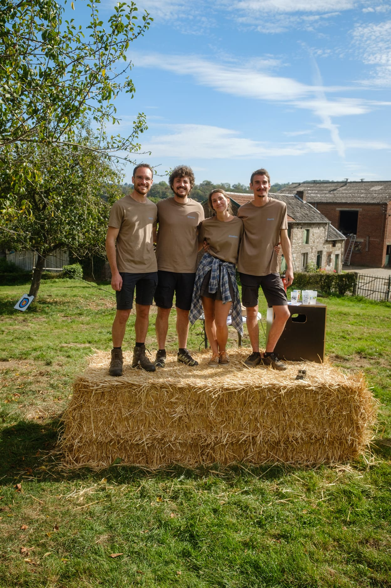
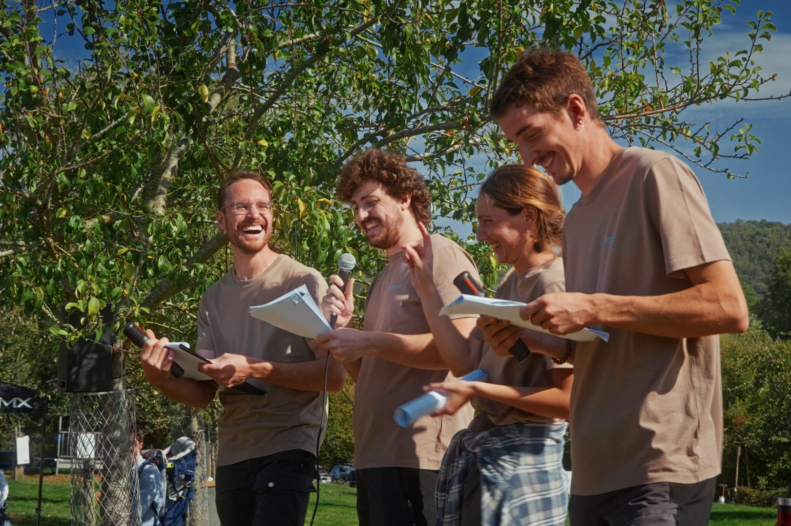
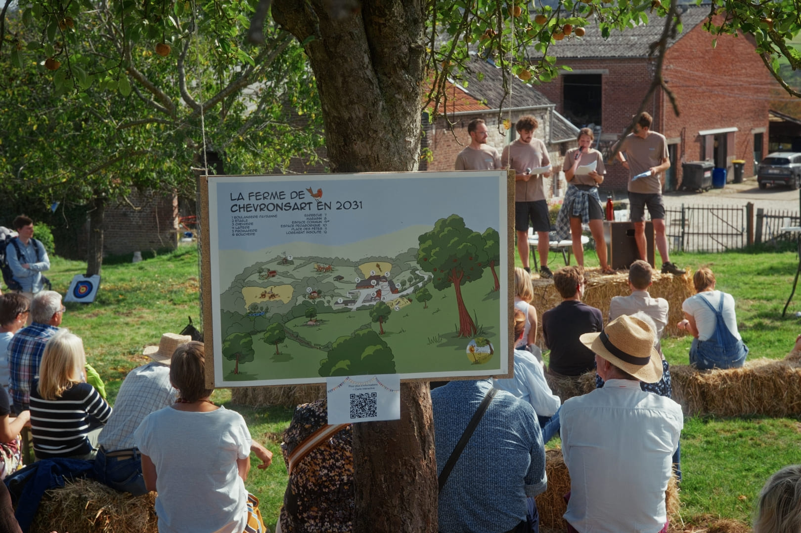

L'ASBL Paysans Demain 🕰️
Notre histoire commence en 2021, avec la création du collectif Paysans Demain. En 2022, nous lançons une campagne de financement participatif pour planter un verger. En 2023, les chantiers participatifs se poursuivent autour du verger, de la mare et des haies. Le projet commence doucement à prendre forme sur le terrain.
Pendant ce temps, chacun continue également à se former. On développe les savoir-faire nécessaires à notre future installation, et on se confronte à la réalité du terrain. Une manière de nous préparer au mieux, mais aussi de nous assurer que cette aventure agricole est bien celle que nous souhaitons vivre.
Étienne part vivre à Lyon pour rejoindre Axelle et se former au métier de paysan-boulanger. Il obtient son diplôme en 2025. Antoine, lui, obtient son diplôme de boucher en 2024. Puis, début 2026, il effectue un stage dans une ferme collective et diversifiée dans les Vosges pour faire découvrir les métiers de boulanger et fromager.
Après plusieurs années de travail en élevages caprins, Pierre et Eli partent pour un an de voyage à vélo afin de découvrir différents modèles d’élevage en France et en Italie. Cette même année, nous suivons la formation iES! et bénéficions de l’accompagnement de Step Entreprendre, ainsi que d’une bourse de pré-création de la région Wallonne.
Aujourd’hui, nous sommes à nouveau tous les quatre réunis en Belgique. Nous continuons à construire le projet avec Step Entreprendre, et notamment Thomas, que l’on embrasse ! Et nous avons maintenant, quasi jour pour jour, une année devant nous avant la reprise de la ferme, planifiée le 1er octobre 2027.

Antoine Stifkens 👨🌾
Antoine est celui d'entre nous qui entretient le lien le plus fort avec ce lieu : il a grandi à 50 mètres d'ici et c'est auprès de son grand-père qu'il a attrapé le virus de l'agriculture.
Cette passion l'a conduit à quitter l'enseignement général pour s'orienter vers des études agricoles à La Reid, avant de devenir bioingénieur à Gembloux. Ce qui le passionne, ce sont les liens étroits entre l'agriculture et la nature, ainsi que les bons produits élaborés par des personnes qui respectent le vivant. Pour aller au bout de sa démarche, il a obtenu son diplôme de boucher en 2024 et a effectué un stage dans une ferme diversifiée dans les Vosges.

Pierre 🐐
Après des études de psychologie sans grande conviction, c'est à la suite d'un woofing en maraîchage en Espagne que Pierre a le déclic : il veut retourner à l'essentiel pour contribuer à changer les choses.
Il a d'abord rejoint la coopérative citoyenne Vent de Terre, avant de travailler dans une chèvrerie où il a eu le coup de foudre pour l'élevage caprin. L'envie d'aller plus loin l'a poussé à voyager à vélo pendant un an avec Eli pour découvrir d'autres fermes en France et en Italie, et ainsi affiner son savoir-faire autour des chèvres avant de fonder ce projet.

Étienne Renier 🥖
Après avoir travaillé comme ingénieur industriel dans le photovoltaïque pendant 3 ans, Étienne a décidé de passer du photovoltaïque à la photosynthèse suite au visionnage d'un film sur l'agriculture régénérative.
Après un voyage à vélo de 6 mois en Amérique du Sud avec Pierre, il est parti vivre à Lyon pour apprendre le métier de Paysan Boulanger, qui maîtrise toute la filière de la graine au pain. Diplômé en 2025, il a travaillé pendant deux ans dans une boulangerie réputée comme l'une des meilleures de Lyon avant de s'engager pleinement dans l'aventure de Chevronsart.

Elisabeth (Eli) 🌿
Avec un parcours en sciences sociales et politiques internationales, Eli se passionne pour les plantes qui soignent et qui nourrissent. En parallèle de son travail à la Croix-Rouge avec des demandeurs d'asile, elle a rejoint une colocation où elle a découvert la chèvre, un animal qui a changé sa vie.
Émerveillée par la fabrication du fromage et la vie au rythme des saisons, elle a fini par partir à l'aventure avec Pierre pour un voyage d'un an à vélo afin de découvrir différentes manières de vivre et de travailler l'élevage caprin. Aujourd'hui, elle souhaite réunir dans ce projet l'élevage de chèvres, la passion des plantes et le soin porté aux autres.


